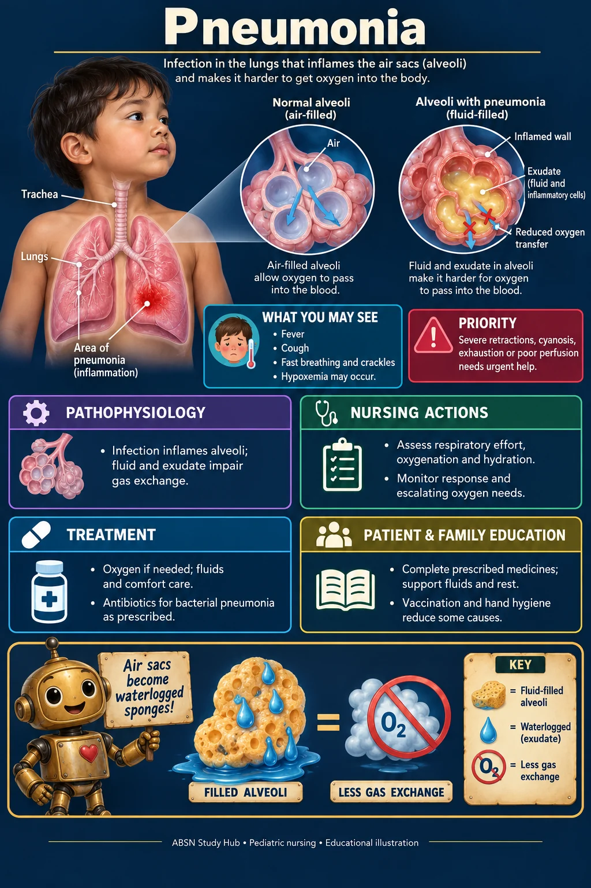

🫁 Respiratory · NUR 235 · Module 8
Pneumonia
Fever, cough, fast breathing and crackles; hypoxemia may occur.


Study notes
🚨 Priority
Severe retractions, cyanosis, exhaustion or poor perfusion needs urgent help.
⚙ Pathophysiology
- Infection inflames alveoli; fluid and exudate impair gas exchange.
🩺 Nursing actions
- Assess respiratory effort, oxygenation and hydration.
- Monitor response and escalating oxygen needs.
💊 Treatment
- Oxygen if needed; fluids and comfort care.
- Antibiotics for bacterial pneumonia as prescribed.
🏠 Patient & family education
- Complete prescribed medicines; support fluids and rest.
- Vaccination and hand hygiene reduce some causes.
🗝 Visual mnemonic key
Air sacs become waterlogged sponges: FILLED ALVEOLI = LESS GAS EXCHANGE.
The cartoon objects are memory symbols. The labeled anatomy beside them is the medical illustration.
Where this fits in the course
Based on the supplied course maps and case-study topics. This concise visual companion adds original illustrations and memory aids; the original teaching files remain available.
Supplemental references for this system
Illustrations show typical features, not every possible presentation. Medication and procedure decisions follow the individual clinical plan. Original mnemonics are not affiliated with Picmonic.